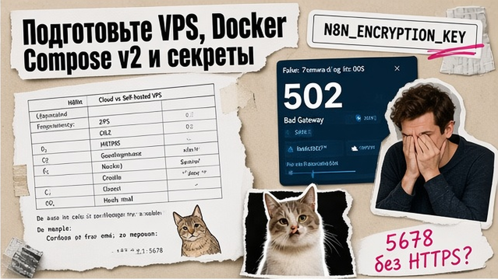
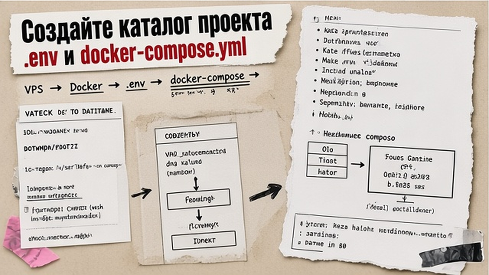
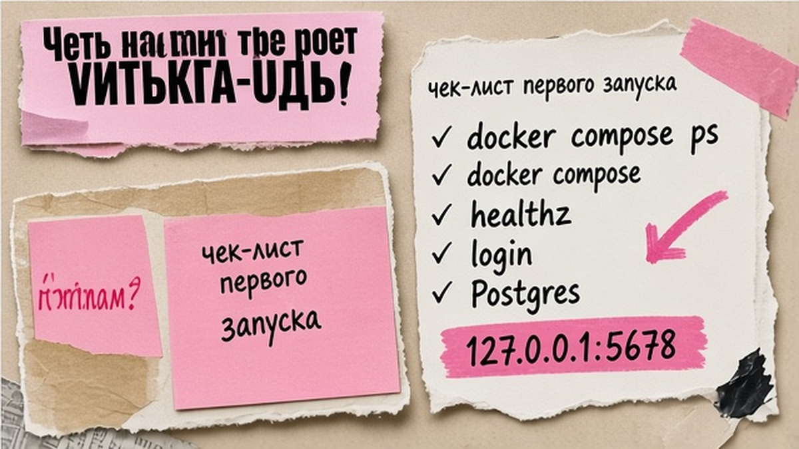

Запрос "n8n docker" упирается в разрозненные гайды: где PostgreSQL, где HTTPS, почему webhook ведёт на localhost. Self-hosted n8n (свой сервер вместо n8n Cloud) на VPS через Docker Compose держит пароли интеграций у вас, но без N8N_ENCRYPTION_KEY и N8N_WEBHOOK_URL сценарии с Telegram и CRM встают. Ниже вы пройдёте один связный трек: compose, домен, бэкап и чеклист перед продом.
TL;DR / Быстрый инсайт: Для прода n8n в Docker нужны PostgreSQL (не SQLite), volume /home/node/.n8n, заранее заданный N8N_ENCRYPTION_KEY, bind порта 127.0.0.1:5678 и reverse proxy с HTTPS. За proxy задайте N8N_WEBHOOK_URL, N8N_PROXY_HOPS=1 и forwarded-заголовки. Обновление: backup, docker compose pull, down, up -d, проверка /healthz. MySQL для backend n8n 2.x не используйте.
Docker - "коробка" с n8n без ручной установки в систему; Compose описывает n8n, Postgres и тома в одном файле. Webhook - URL, на который CRM или форма шлёт событие. UI по умолчанию на порту 5678; в прод его прячут за HTTPS-proxy на localhost.
Доки n8n советуют Docker для self-host; для команды берите PostgreSQL (DB_TYPE=postgresdb). Cloud trial или Make быстрее для проверки идеи - VPS оправдан, когда данные должны остаться у вас.
Схема деплоя:
VPS (Ubuntu/Debian) → Docker Engine + Compose v2 → .env с секретами → docker compose up -d → проверка на 127.0.0.1:5678 → reverse proxy (HTTPS) → тест webhook → cron-бэкап Postgres + volume n8n

VPS на Ubuntu 24.04 или Debian 12, Docker Engine + Compose v2 (docker compose version). A-запись поддомена на IP сервера - иначе не получите TLS.
Сохраните в менеджере паролей N8N_ENCRYPTION_KEY (без него не расшифруете credentials в n8n):
openssl rand -base64 32
Pin N8N_VERSION (не latest), пароль Postgres, TZ=Europe/Moscow. Делайте: каталог вне git. Не делайте: коммит .env и bind 5678 на 0.0.0.0.

На VPS:
sudo mkdir -p /opt/n8n && cd /opt/n8n
nano .env
nano docker-compose.yml
Пример .env (значения замените своими):
POSTGRES_USER=n8n
POSTGRES_PASSWORD=CHANGE_ME_STRONG
POSTGRES_DB=n8n
N8N_ENCRYPTION_KEY=PASTE_OPENSSL_OUTPUT
N8N_VERSION=1.XX.X
TZ=Europe/Moscow
GENERIC_TIMEZONE=Europe/Moscow
Production docker-compose.yml с PostgreSQL 18 (или 17 по шаблонам n8n-hosting), healthcheck и локальным bind:
services:
postgres:
image: postgres:18
restart: unless-stopped
environment:
POSTGRES_USER: ${POSTGRES_USER}
POSTGRES_PASSWORD: ${POSTGRES_PASSWORD}
POSTGRES_DB: ${POSTGRES_DB}
volumes:
- postgres_data:/var/lib/postgresql/data
healthcheck:
test: ["CMD-SHELL", "pg_isready -U ${POSTGRES_USER} -d ${POSTGRES_DB}"]
interval: 10s
timeout: 5s
retries: 5
n8n:
image: docker.n8n.io/n8nio/n8n:${N8N_VERSION}
restart: unless-stopped
depends_on:
postgres:
condition: service_healthy
ports:
- "127.0.0.1:5678:5678"
environment:
DB_TYPE: postgresdb
DB_POSTGRESDB_HOST: postgres
DB_POSTGRESDB_PORT: 5432
DB_POSTGRESDB_DATABASE: ${POSTGRES_DB}
DB_POSTGRESDB_USER: ${POSTGRES_USER}
DB_POSTGRESDB_PASSWORD: ${POSTGRES_PASSWORD}
N8N_ENCRYPTION_KEY: ${N8N_ENCRYPTION_KEY}
GENERIC_TIMEZONE: ${GENERIC_TIMEZONE}
TZ: ${TZ}
volumes:
- n8n_data:/home/node/.n8n
volumes:
postgres_data:
n8n_data:
Том n8n_data нужен даже с Postgres (ключи, assets). SQLite - только для соло-теста. Не делайте: MySQL backend в n8n 2.x.

Ориентир: 2 vCPU и 4 GB RAM для n8n + Postgres. Не делайте: открывать 5678 в firewall наружу.
HTTPS делает reverse proxy: Caddy, nginx или Traefik. Проксируйте на 127.0.0.1:5678, передайте X-Forwarded-Proto, Host, For.
| Критерий | Caddy | nginx | Traefik |
|---|---|---|---|
| TLS "из коробки" | Авто Let's Encrypt в 5-10 строк | Certbot или ручной cert | Labels + ACME resolver |
| Кому проще | Минимум конфига на одном VPS | Если уже знаете nginx | Docker-native несколько сервисов |
| Риск для webhook | Неверные env n8n | Забытые forwarded headers | Ошибка в labels middleware |
Добавьте в сервис n8n (значения под ваш домен):
N8N_HOST=auto.example.ru
N8N_PROTOCOL=https
N8N_PORT=443
N8N_WEBHOOK_URL=https://auto.example.ru/
N8N_PROXY_HOPS=1
N8N_SECURE_COOKIE=true
Только N8N_WEBHOOK_URL (не WEBHOOK_URL), затем docker compose up -d. Делайте: тест webhook с https-URL. Не делайте: http снаружи без N8N_PROXY_HOPS.
Репозиторий self-hosted-ai-starter-kit добавляет Ollama и Qdrant для локальных LLM и RAG. Запуск: docker compose --profile cpu up. Держите отдельно от основного prod-стека и бэкапите так же, как Postgres выше.
Бэкап - два слоя: том /home/node/.n8n (ключ шифрования, бинарные данные) и дамп PostgreSQL. Раз в месяц проверяйте восстановление на тестовом VPS, иначе backup превращается в ритуал. Пример cron (пути и пароли свои):
docker compose exec -T postgres pg_dump -U n8n n8n > /backup/n8n-$(date +%F).sql
docker run --rm -v n8n_n8n_data:/data -v /backup:/backup alpine \
tar czf /backup/n8n-volume-$(date +%F).tar.gz -C /data .
Файл .env с N8N_ENCRYPTION_KEY храните offline-копией. Обновление по докам n8n:
Ошибка decrypt - сменили N8N_ENCRYPTION_KEY; webhook на localhost - env HTTPS; postgres unhealthy - пароль или диск. Не делайте: down -v на проде.
Дальше - ИИ-агенты в n8n. Облачные сценарии без Docker - на курсе Make.
Материал проверен: эксперт Артур Хорошев (CEO Maya AI, практик Make.com и self-host автоматизации).
Достоверность данных: env-переменные и порядок обновления сверены с документацией n8n на 05.10.2026; показы Вордстат не указаны (MCP недоступен).
Да для локального теста одного пользователя. Для прода и нескольких аккаунтов сразу поднимайте PostgreSQL через DB_TYPE=postgresdb и том n8n_data, как в compose выше.
Ключ может сгенерироваться внутри volume при первом старте. При пересоздании контейнера без того же volume или с другим ключом сохранённые credentials не расшифруются. Сгенерируйте ключ через openssl, пропишите в .env и храните копию offline.
Не настроены публичный URL и proxy: добавьте N8N_WEBHOOK_URL=https://ваш-домен/, N8N_HOST, N8N_PROTOCOL=https, N8N_PROXY_HOPS=1 и проверьте forwarded-заголовки на reverse proxy.
Сделайте backup Postgres и volume, обновите pin N8N_VERSION, выполните docker compose pull, down, up -d, откройте UI и /healthz. Не используйте down -v.
Только для queue mode с отдельным worker (шаблон withPostgresAndWorker в n8n-hosting). Базовый single-instance на Postgres + n8n Redis не требует.
Рабочий ориентир для пары контейнеров - 2 vCPU и 4 GB RAM; AI Starter Kit с Ollama планируйте отдельно с большим запасом памяти.
Нет. Backend MySQL/MariaDB снят с поддержки в линейке 2.x - используйте PostgreSQL или SQLite только для теста.